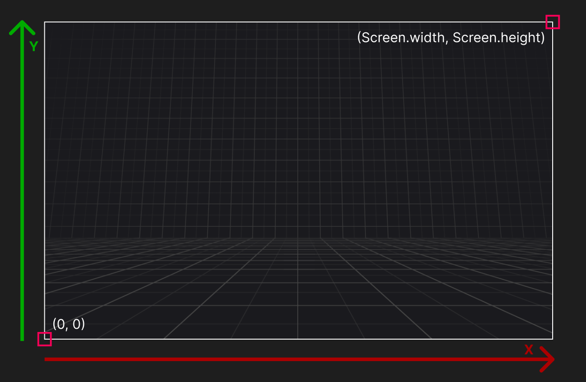
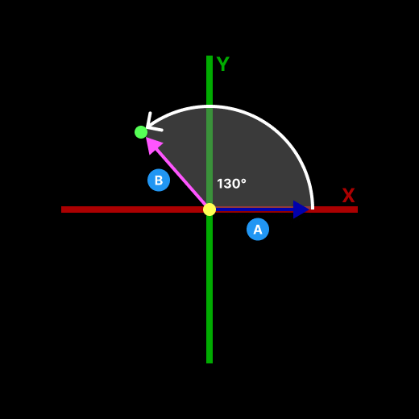
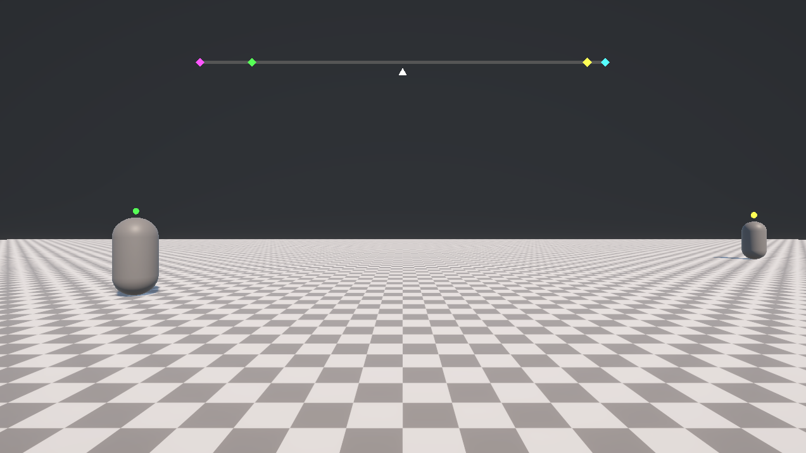
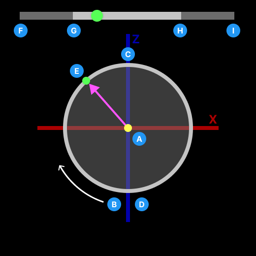

Target Indicator
A Target Indicator is a C# struct that contains the properties necessary for placing indicators on the screen to track a target. The following sections explains the target indicator properties and how they map to the screen in more detail.
Target indicator id
The TargetIndicatorId property is the unique ID associated with a target indicator. It is generated by the Target indicator manager for each target and persists until the target is removed.
If a target is added back to the target indicator manager after it has been removed, it will have a new target indicator ID.
Target
The target is the transform that the target indicator is tracking. The position of the target is what gets transformed to the screen coordinates for the target indicator.
Screen pose
The ScreenPose property is a Pose that contains the position and rotation of the target indicator for placement of a visual indicator. The values stored in the position and rotation of the pose differ between the boundary type when the target indicator was created. Refer to interpret the screen pose to learn how to use the respective pose values.
Is outside boundary
The IsOutsideBoundary property indicates if the screen pose of the target is outside of the boundary configured by the target indicator manager when the target indicator was created. The IsOutsideBoundary property will not update on existing target indicators structs if the boundary changes. You should wait for an updated target indicator an update to get the updated state or use TargetIndicatorManager.IsOutsideBoundary.
Important
For BoundaryType.CompassTape and BoundaryType.Unbounded the IsOutsideBoundary property will always be false. BoundaryType.Compass requires knowledge about your specific compass tape setup to determine if it's outside the boundary.sTape
Refer to samples as a reference for how you can check if the target indicator is outside of the boundary.
Screen coordinates
Target indicators uses screen coordinates in pixels to describe the placement of a target indicator. The bottom left of the screen corresponds to coordinate (0, 0) and the top right of the screen corresponds to (Screen.width, Screen.height).

Interpret the screen pose
Depending on your target indicator manager's boundary configuration, the screen pose values can be interpreted differently. The following sections describe how to interpret the ScreenPose for different boundary types.
Warning
If you are using uGUI (Unity UI), the coordinates can be affected by the Canvas.renderMode. Refer to uGUI indicators to learn more about how to handle different render modes.
Padded boundary type
The ScreenPose.position.x and ScreenPose.position.y components correspond directly to screen coordinates. This means you should place your visual indicator at those exact coordiantes.
The ScreenPose.position.z component corresponds to the depth from the camera the target is in world space. This can be helpful to know if a target is behind you. It is not needed for placing visual indicators on the screen.
The ScreenPose.rotation property indicates the direction to rotate towards the target in screen space from the right vector (1, 0). This is useful if you want to have an arrow pointing at the target in screen space when the target is outside the boundary.
Refer to the image below to understand how rotations apply to target indicators.

This image shows the screen space coordinate system and the rotation of a target indicator. The indicator has a rotation of 130° relative to the right vector (1, 0) in screen space. Use this value to rotate an arrow to point at the target.
- The vector in screen space that the rotation of a screen pose is relative to.
- The vector pointing to the target indicators screen pose. This is the vector used to calculate the angle.
Absolute boundary type
Like the padded boundary type, the absolute boundary uses the ScreenPose.position and ScreenPose.rotation the same.
Compass tape boundary type
Unlike the Padded and Absolute boundary types, the CompassTape boundary type does not provide direct pixel screen coordinates. Instead, TargetIndicator.ScreenPose.x contains a normalized value between 0 and 1, representing the target's horizontal position on the tape. All other ScreenPose components will be 0. The screen pose rotation will be Quaternion.identity.
Compass tape primer
Compass tapes are compasses that are displayed as a horizontal strip with a scrolling texture as the user turns around the Y, or up, axis and the middle of the compass always corresponds to the direction the user is facing.

Compass tapes are broken up into two parts:
Full tape
Full tape is the part of the compass tape that reprsents the full spectrum of cardinal directions north, east, south, and west. It is the distance for one full rotation. The full tape is not always visible as it requires a texture to scroll and wrap around the tape as the user makes a full rotation.
Visible tape
Visible tape refers to the part of the compass tape that is visible at any given time and is shorter than the full tape length. Often the visible tape is half the length of the full tape.
Refer to the image below to understand how the screen pose for a compass tape is mapped to a compass tape.

This image represents looking down onto a player on the XZ plane of the world.
- The point where the user is standing facing the positive Z axis.
- The point directly behind the player that corresponds to 0, or the left end of the full tape. The values increase around the circle in a clockwise rotation.
- The point directly in front of the player that corresponds to 0.5, or half way across the full tape.
- The point also directly behind the player that corresponds to 1, or the right end of the full tape. This is the highest value on the compass tape and rotating clockwise beyond this point will wrap the value back to 0.
- The point of a tracked target in front of and to the left of the player. The value will be ≈ 0.3, or about one third from the left end of the full tape represented by the matching green circles.
- The left end of the full tape.
- The left end of the visible tape.
- The right end of the visible tape.
- The right end of the full tape.
A target that is directly in front of the player will have a ScreenPose.position.x value of 0.5. As the target moves around the player in a clockwise rotation, its value will increase to 1 as it reaches directly behind the player. If the target continues to move in a clockwise rotation from behind the player, its value will wrap to 0 and increase back to 0.5 as it reached to its starting point directly in front of the player.
You can use this 0 to 1 value to know where on your full tape the indicator should be placed.
Unbounded boundary type
Similar to Padded and Absolute boundary types, Unbounded uses direct pixel screen coordinates. However, when a target moves outside the camera's field of view, its corresponding visual indicator will also move off-screen, as it is not clamped to the screen edges.
When a target rotates behind the player, resulting in TargetIndicator.ScreenPose.position.z becoming less than 0, the system sets TargetIndicator.ScreenPose.position.x to float.MaxValue. This ensures visual indicators do not incorrectly appear on screen when their target is behind the player.